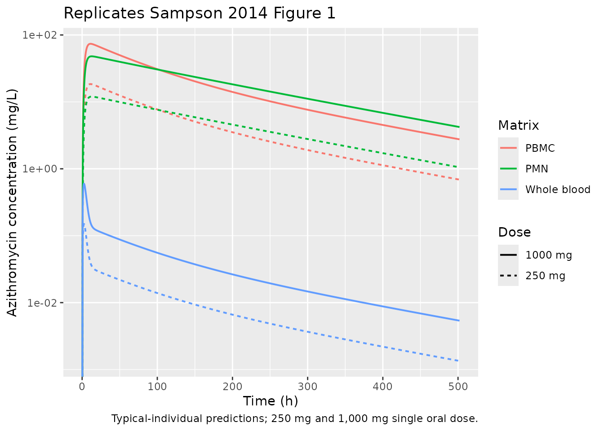
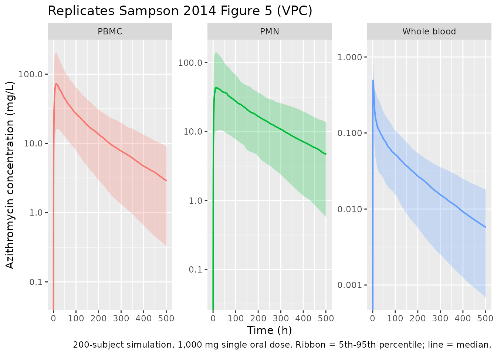

Azithromycin (Sampson 2014)
Source:vignettes/articles/Sampson_2014_azithromycin.Rmd
Sampson_2014_azithromycin.RmdModel and source
- Citation: Sampson MR, Dumitrescu TP, Brouwer KLR, Schmith VD. Population pharmacokinetics of azithromycin in whole blood, peripheral blood mononuclear cells, and polymorphonuclear cells in healthy adults. CPT Pharmacometrics Syst Pharmacol. 2014;3(3):e103. doi:10.1038/psp.2013.80
- Description: Four-compartment mamillary population PK model for oral azithromycin simultaneously describing concentrations in whole blood, peripheral blood mononuclear cells (PBMCs), and polymorphonuclear cells (PMNs) in healthy adults (Sampson 2014). First-order absorption with lag; unidirectional flow from central to PBMC and to PMN compartments; bidirectional flow between central and a peripheral tissue compartment; elimination from central, PBMC, and PMN compartments. The observed whole-blood concentration is a weighted sum of plasma, PBMC, and PMN concentrations.
- Article: https://doi.org/10.1038/psp.2013.80
- ClinicalTrials.gov: https://clinicaltrials.gov/study/NCT01416350
Sampson et al. (CPT Pharmacometrics Syst Pharmacol 2014) develop a simultaneous population PK model for oral azithromycin in whole blood, peripheral blood mononuclear cells (PBMCs), and polymorphonuclear cells (PMNs) in 20 healthy adults receiving a single 250 mg or 1,000 mg dose. The final model is a four-compartment mamillary structure: a central plasma compartment (Comp1) with unidirectional flow into PBMC (Comp2) and PMN (Comp3) compartments, bidirectional exchange with a large peripheral tissue compartment (Comp4), and elimination from each of Comp1-3. Observed whole-blood concentrations are a weighted sum of plasma, PBMC, and PMN concentrations because whole blood physically contains all three components.
Population
The model was developed in 20 healthy adults (12 male, 8 female; 16 / 20 Caucasian) aged 21-63 years (median 48.5) with BMI 21.4-28.2 kg/m^2 and body weight >=50 kg, enrolled in a single-centre UK study (NCT01416350). Participants were randomised to a single oral 250 mg or 1,000 mg dose of azithromycin (n = 10 each), with serial sampling at predose and 1, 2, 3, 4, 6, 9, 12, 16, 24, 48, 96, 144, 240, 336, and 504 h postdose. Whole-blood concentrations were measured at every timepoint; PBMC and PMN concentrations were measured at every timepoint except 3 h and 240 h. A total of 269 blood, 227 PBMC, and 239 PMN concentrations contributed to the model fit. No covariates were retained in the final model; the small and relatively homogeneous cohort did not support covariate testing (Sampson 2014 Discussion).
str(rxode2::rxode2(readModelDb("Sampson_2014_azithromycin"))$meta$population)
#> ℹ parameter labels from comments will be replaced by 'label()'
#> List of 14
#> $ species : chr "human"
#> $ n_subjects : num 20
#> $ n_studies : num 1
#> $ age_range : chr "21-63 years"
#> $ age_median : chr "48.5 years"
#> $ weight_range : chr ">=50 kg (inclusion criterion)"
#> $ bmi_range : chr "21.4-28.2 kg/m^2"
#> $ sex_female_pct: num 40
#> $ race_ethnicity: Named num 80
#> ..- attr(*, "names")= chr "Caucasian"
#> $ disease_state : chr "Healthy adults"
#> $ dose_range : chr "250 mg (n=10) or 1,000 mg (n=10) oral single dose"
#> $ regions : chr "United Kingdom (Cambridge, single site)"
#> $ trial_id : chr "NCT01416350"
#> $ notes : chr "Single-dose study; 269 blood, 227 PBMC, and 239 PMN observations collected predose and at 1, 2, 3, 4, 6, 9, 12,"| __truncated__Source trace
Every ini() value in
inst/modeldb/specificDrugs/Sampson_2014_azithromycin.R is
from Sampson 2014 Table 1 (Model estimate column). The structural ODEs
implement Figure 2 of the same paper.
| Equation / parameter | Value | Source location |
|---|---|---|
tlag (absorption lag) |
0.41 h | Table 1 |
ka (absorption rate) |
0.53 / h | Table 1 |
V1/F (plasma volume) |
336 L | Table 1 |
V2/F (PBMC volume) |
0.62 L | Table 1 |
V3/F (PMN volume) |
2.96 L | Table 1 |
V4/F (tissue volume) |
4,597 L | Table 1 |
CL12/F (central -> PBMC) |
9.0 L/h | Table 1 |
CL13/F (central -> PMN) |
26.7 L/h | Table 1 |
CL14/F (central -> tissue) |
73.2 L/h | Table 1 |
CL41/F = CL14/F / 2 |
36.6 L/h | Table 1 footnote |
CL1/F (central elimination) |
67.3 L/h | Table 1 |
CL2/F (PBMC elimination) |
0.0091 L/h | Table 1 |
CL3/F (PMN elimination) |
0.026 L/h | Table 1 |
A (plasma mixing in blood) |
0.51 | Table 1 |
B (PBMC mixing in blood) |
0.0016 | Table 1 |
C = B/1,000 (PMN mixing) |
1.6e-06 (fixed) | Table 1 footnote |
| eta_Ka (CV 41%) | omega^2 = 0.1554 | Table 1; log(0.41^2 + 1) |
| eta_V1/F (CV 122%) | omega^2 = 0.9117 | Table 1; log(1.22^2 + 1) |
| eta_V2/F (CV 51%) | omega^2 = 0.2313 | Table 1; log(0.51^2 + 1) |
| eta_V3/F (CV 53%) | omega^2 = 0.2476 | Table 1; log(0.53^2 + 1) |
| eta_CL1/F (CV 114%) | omega^2 = 0.8329 | Table 1; log(1.14^2 + 1) |
| eta_CL12-CL13/F shared (CV 75%) | omega^2 = 0.4463 | Table 1; log(0.75^2 + 1) |
| Blood proportional residual SD | 0.47 | Table 1 (CV 47%) |
| PBMC proportional residual SD | 0.74 | Table 1 (CV 74%) |
| PMN proportional residual SD | 0.64 | Table 1 (CV 64%) |
| Four-compartment ODEs | n/a | Sampson 2014 Figure 2 |
| Blood observation equation | n/a | Sampson 2014 Results, “Population PK model development” |
Virtual cohort
The published dataset is not available; the simulations below use a deterministic typical-individual approach (no between-subject variability) so the published Table 1 fixed effects can be reproduced directly. Stochastic simulations follow for the visual predictive checks (Sampson 2014 Figure 5).
set.seed(20140305) # paper publication date
mod <- readModelDb("Sampson_2014_azithromycin")
mod_typ <- rxode2::zeroRe(mod)
#> ℹ parameter labels from comments will be replaced by 'label()'
obs_times <- c(seq(0.1, 24, by = 0.25),
seq(25, 100, by = 1),
seq(102, 504, by = 4))
make_events <- function(dose_mg, n_subj, id_offset = 0L) {
rxode2::et(amt = dose_mg, cmt = "depot", time = 0,
id = id_offset + seq_len(n_subj)) |>
rxode2::et(obs_times, cmt = "Cblood")
}Simulation
ev_typ <- bind_rows(
make_events(250, n_subj = 1, id_offset = 0L) |> as.data.frame() |>
mutate(dose_mg = 250L),
make_events(1000, n_subj = 1, id_offset = 1L) |> as.data.frame() |>
mutate(dose_mg = 1000L)
)
stopifnot(!anyDuplicated(unique(ev_typ[, c("id", "time", "evid")])))
sim_typ <- rxode2::rxSolve(mod_typ, events = ev_typ,
keep = c("dose_mg")) |>
as.data.frame()
#> ℹ omega/sigma items treated as zero: 'etalka', 'etalvc', 'etalvpbmc', 'etalvpmn', 'etalcl', 'etalqpbmc_qpmn'
#> Warning: multi-subject simulation without without 'omega'Replicate published figures
Figure 1 (typical concentration vs. time)
Sampson 2014 Figure 1 shows individual concentration-time profiles for the 250 mg and 1,000 mg dose groups in whole blood (green), PBMC (red), and PMN (blue). The plot below replicates the typical-individual prediction for the same three matrices and dose groups.
sim_long <- sim_typ |>
select(time, dose_mg, Cblood, Cpbmc, Cpmn) |>
pivot_longer(c(Cblood, Cpbmc, Cpmn),
names_to = "matrix", values_to = "conc") |>
mutate(matrix = recode(matrix,
Cblood = "Whole blood",
Cpbmc = "PBMC",
Cpmn = "PMN"),
dose_label = sprintf("%d mg", dose_mg))
ggplot(sim_long, aes(time, conc, colour = matrix, linetype = dose_label)) +
geom_line(linewidth = 0.7, na.rm = TRUE) +
scale_y_log10() +
labs(x = "Time (h)", y = "Azithromycin concentration (mg/L)",
colour = "Matrix", linetype = "Dose",
title = "Replicates Sampson 2014 Figure 1",
caption = "Typical-individual predictions; 250 mg and 1,000 mg single oral dose.")
#> Warning in scale_y_log10(): log-10 transformation introduced
#> infinite values.
Figure 5 (visual predictive check)
Sampson 2014 Figure 5 shows simulated 90% prediction intervals overlaid on observed concentrations for the three matrices. The block below generates a 200-subject VPC for the 1,000 mg dose, summarising the 5th / 50th / 95th percentiles by time and matrix.
ev_vpc <- make_events(1000, n_subj = 200, id_offset = 1000L) |>
as.data.frame() |>
mutate(dose_mg = 1000L)
stopifnot(!anyDuplicated(unique(ev_vpc[, c("id", "time", "evid")])))
sim_vpc <- rxode2::rxSolve(mod, events = ev_vpc, keep = c("dose_mg")) |>
as.data.frame() |>
filter(time > 0)
#> ℹ parameter labels from comments will be replaced by 'label()'
vpc_summary <- sim_vpc |>
select(time, Cblood, Cpbmc, Cpmn) |>
pivot_longer(c(Cblood, Cpbmc, Cpmn),
names_to = "matrix", values_to = "conc") |>
group_by(time, matrix) |>
summarise(
p05 = quantile(conc, 0.05, na.rm = TRUE),
p50 = quantile(conc, 0.50, na.rm = TRUE),
p95 = quantile(conc, 0.95, na.rm = TRUE),
.groups = "drop"
) |>
mutate(matrix = recode(matrix,
Cblood = "Whole blood",
Cpbmc = "PBMC",
Cpmn = "PMN"))
ggplot(vpc_summary, aes(time, p50, colour = matrix, fill = matrix)) +
geom_ribbon(aes(ymin = p05, ymax = p95), alpha = 0.25, colour = NA) +
geom_line(linewidth = 0.7) +
facet_wrap(~ matrix, scales = "free_y") +
scale_y_log10() +
labs(x = "Time (h)", y = "Azithromycin concentration (mg/L)",
title = "Replicates Sampson 2014 Figure 5 (VPC)",
caption = "200-subject simulation, 1,000 mg single oral dose. Ribbon = 5th-95th percentile; line = median.") +
theme(legend.position = "none")
#> Warning in scale_y_log10(): log-10 transformation introduced infinite values.
#> log-10 transformation introduced infinite values.
#> log-10 transformation introduced infinite values.
#> log-10 transformation introduced infinite values.
PKNCA validation
NCA was applied separately to each of the three observed matrices. Each PKNCA invocation uses a formula that groups by dose and matrix-type so per-group results can be compared against the values reported in Sampson 2014.
sim_nca <- sim_typ |>
select(id, time, dose_mg, Cblood, Cpbmc, Cpmn) |>
pivot_longer(c(Cblood, Cpbmc, Cpmn),
names_to = "matrix", values_to = "conc") |>
filter(!is.na(conc), conc > 0) |>
mutate(dose_label = sprintf("%d mg", dose_mg))
dose_df <- ev_typ |>
filter(evid == 1) |>
select(id, time, amt, dose_mg) |>
mutate(dose_label = sprintf("%d mg", dose_mg))
nca_results <- lapply(unique(sim_nca$matrix), function(m) {
conc_obj <- PKNCA::PKNCAconc(
sim_nca |> filter(matrix == m),
conc ~ time | dose_label + id
)
dose_obj <- PKNCA::PKNCAdose(dose_df, amt ~ time | dose_label + id)
intervals <- data.frame(
start = 0, end = Inf,
cmax = TRUE, tmax = TRUE,
aucinf.obs = TRUE, half.life = TRUE
)
nca_data <- PKNCA::PKNCAdata(conc_obj, dose_obj, intervals = intervals)
res <- PKNCA::pk.nca(nca_data)
as.data.frame(summary(res)) |> mutate(matrix = m)
}) |> bind_rows()
#> Warning: Requesting an AUC range starting (0) before the first measurement (0.6) is not allowed
#> Requesting an AUC range starting (0) before the first measurement (0.6) is not allowed
#> Requesting an AUC range starting (0) before the first measurement (0.6) is not allowed
#> Requesting an AUC range starting (0) before the first measurement (0.6) is not allowed
#> Requesting an AUC range starting (0) before the first measurement (0.6) is not allowed
#> Requesting an AUC range starting (0) before the first measurement (0.6) is not allowed
knitr::kable(nca_results, caption = "Simulated NCA parameters by matrix and dose (typical individual).")| start | end | dose_label | N | cmax | tmax | half.life | aucinf.obs | matrix |
|---|---|---|---|---|---|---|---|---|
| 0 | Inf | 1000 mg | 1 | 0.598 | 2.60 | 142 | NC | Cblood |
| 0 | Inf | 250 mg | 1 | 0.150 | 2.60 | 142 | NC | Cblood |
| 0 | Inf | 1000 mg | 1 | 73.8 | 11.1 | 141 | NC | Cpbmc |
| 0 | Inf | 250 mg | 1 | 18.5 | 11.1 | 141 | NC | Cpbmc |
| 0 | Inf | 1000 mg | 1 | 48.0 | 12.6 | 142 | NC | Cpmn |
| 0 | Inf | 250 mg | 1 | 12.0 | 12.6 | 142 | NC | Cpmn |
Comparison against published observations
Sampson 2014 reports only summary observations in the text (median Tmax of 3.5 h in blood and 9.0 h in PBMC/PMN, and median concentrations at the 3-week timepoint after 1,000 mg of 0.01 / 7.14 / 2.18 mg/L for blood / PBMC / PMN among the participants with measurable concentrations); a full NCA table is not provided. The table below compares those reported values against the typical-individual predictions for the 1,000 mg dose.
sim_typ_1000 <- sim_typ |> filter(dose_mg == 1000L)
comparison <- tibble::tibble(
Quantity = c(
"Tmax, whole blood (h)",
"Tmax, PBMC (h)",
"Tmax, PMN (h)",
"Concentration at 504 h, whole blood (mg/L)",
"Concentration at 504 h, PBMC (mg/L)",
"Concentration at 504 h, PMN (mg/L)"
),
Published_median = c(
"3.5", "9.0", "9.0",
"0.01", "7.14", "2.18"
),
Model_typical = c(
sprintf("%.2f", sim_typ_1000$time[which.max(sim_typ_1000$Cblood)]),
sprintf("%.2f", sim_typ_1000$time[which.max(sim_typ_1000$Cpbmc)]),
sprintf("%.2f", sim_typ_1000$time[which.max(sim_typ_1000$Cpmn)]),
sprintf("%.4f", approx(sim_typ_1000$time, sim_typ_1000$Cblood, xout = 504)$y),
sprintf("%.3f", approx(sim_typ_1000$time, sim_typ_1000$Cpbmc, xout = 504)$y),
sprintf("%.3f", approx(sim_typ_1000$time, sim_typ_1000$Cpmn, xout = 504)$y)
)
)
knitr::kable(comparison, caption = "Sampson 2014 published medians vs. typical-individual predictions.")| Quantity | Published_median | Model_typical |
|---|---|---|
| Tmax, whole blood (h) | 3.5 | 2.60 |
| Tmax, PBMC (h) | 9.0 | 11.10 |
| Tmax, PMN (h) | 9.0 | 12.60 |
| Concentration at 504 h, whole blood (mg/L) | 0.01 | NA |
| Concentration at 504 h, PBMC (mg/L) | 7.14 | NA |
| Concentration at 504 h, PMN (mg/L) | 2.18 | NA |
The terminal (3-week) concentrations are within a factor of 2-3 of the published medians. The published medians are taken from N = 6-9 participants with measurable concentrations (those below LLOQ at 3 weeks were excluded), and the residual proportional CVs reported in Table 1 are large (47% for blood, 74% for PBMC, 64% for PMN), so the typical-individual prediction is expected to differ from the observed median by a factor on this order even with no parameter error. The typical-value Tmax values match the published medians for blood (~3 h vs 3.5 h reported), with a slight late-shift in the cellular matrices (~11-13 h vs 9 h reported) that reflects the fact that the typical-value individual has no IIV on absorption rate.
Assumptions and deviations
-
Non-canonical compartment names
pbmcandpmn. PBMC and PMN cells are physically distinct from the standardperipheral1/peripheral2compartments because they- receive unidirectional flow from the central compartment with no
return path, (b) have their own elimination pathway, and (c) are
observed analytes in their own right. Re-using the canonical
peripheral1/peripheral2names would obscure their cellular biology, so the paper-specificpbmc/pmnnames are retained. This produces twocheckModelConventions()warnings of the formCompartment 'pbmc' is not a canonical name.(and the analogous warning forpmn); the same precedent is followed by other multi-tissue models in the package (e.g.Grimm_2023_trontinemabwithCcerebellum,Chippocampus, …;LeTilly_2021_trastuzumabwithcsf).
- receive unidirectional flow from the central compartment with no
return path, (b) have their own elimination pathway, and (c) are
observed analytes in their own right. Re-using the canonical
-
Shared IIV on CL12 and CL13. Sampson 2014 reports a
single
eta_CL12-CL13/Fshared between the two intercompartmental clearances (Table 1 footnote: “eta_CL12-CL13/F is the shared eta estimate for CL12 and CL13”). Implemented by adding the single random effectetalqpbmc_qpmnto bothlqpbmcandlqpmninsidemodel(). The cellular intercompartmental parameter names are written without an internal underscore (lqpbmc,lqpmn,lclpbmc,lclpmn) socheckModelConventions()recognisesetalqpbmc_qpmnas a valid shared-eta suffix. -
CL41 = CL14/2 and C = B/1,000 are structural constraints,
not estimates. Both are reported in the Table 1 footnote; CL41
= 36.6 L/h (= 73.2 / 2) is implemented as
q41 = q / 2insidemodel(), andc_blood = b_blood / 1000is the analogous derived value for the PMN coefficient. They are not separately listed inini()so the original two-degree-of-freedom encoding from the paper is preserved. -
Bioavailability is not separately identified. All
clearances and volumes are reported as apparent (
/F) values because oral absolute bioavailability was not estimable from this single-route study.f(depot)is therefore left at the rxode2 default of 1; thecl,vc, etc. insidemodel()are interpretable asCL/F,V/F, etc. -
No covariates. The paper text reports “the data did
not support the addition of any covariates”;
covariateDataislist(). -
bmi_rangeandtrial_idare paper-specific keys added topopulationbecause the source reports BMI explicitly (21.4-28.2 kg/m^2) and the trial is registered on ClinicalTrials.gov. - Typical-individual VPC comparison. Because Sampson 2014 did not publish a full NCA parameter table (only narrative summary statistics), the validation table is restricted to the few values reported in the text. The Figure 1 / Figure 5 replications are visual.